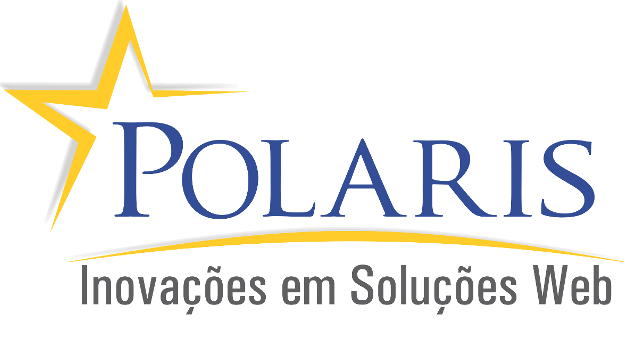

- Polaris - Inovações em Soluções Web
Estagiária na empresa incubada na Universidade Federal de Lavras, Polaris, como Desenvolvedora Web, trabalhando em projetos utilizando o gerenciador de conteúdo Joomla! e linguagens como HTML, CSS, JavaScript e PHP.
Mar/15 - Mar/16- Projeto UFLAView - CEAD/UFLA
Projeto de Extensão realizado no Centro de Educação à Distância (hoje DIRED) da Universidade Federal de Lavras, como Desenvolvedora Web do UFLAView, um projeto que teve como objetivo o mapeamento 3D de toda universidade.
Jun/15 - Jun/16- Coordenadora de Graduação - CASI/UFLA
Atuando voluntariamente no Centro Acadêmico de Sistemas de Informação da Universidade Federal de Lavras como Coordenadora de Graduação, tendo por objetivo atuar em projetos e demandas dos estudantes do curso de BSI, de forma a auxiliá-los nos problemas com as disciplinas durante o curso.
Dez/15 - Jun/17- Projeto de Iniciação Científica - PIBIC/UFLA
Iniciação Científica realizada no Departamento de Ciência da Computação da Universidade Federal de Lavras, sob orientação do professor Heitor Augustus Xavier Costa, pesquisando sobre qualidade de sistemas de software no contexto da Internet das Coisas.
Jul/16 - Set/17- XIII SBSI - SBC
Organização do XIII Simpósio Brasileiro em Sistemas de Informação, promovido pela Sociedade Brasileira de Computação, realizado na Universidade Federal de Lavras e apresentação do artigo Medidas para Avaliar a Qualidade de Sistemas de Informação no Contexto da Internet das Coisas.
Jun/17- LEMAF - FUNDECC/UFLA
Bolsista de Iniciação Científica como Analista de Qualidade e Testes de Software, no Laboratório de Estudos e Projetos em Manejo Florestal alocado na Universidade Federal de Lavras.